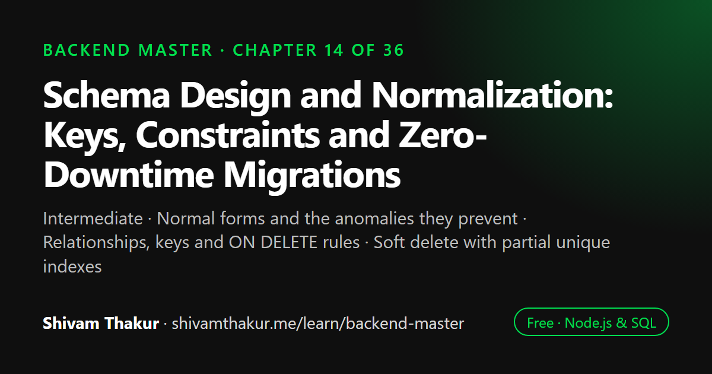

Chapter 14 of 36 · Intermediate
Schema Design and Normalization: Keys, Constraints and Zero-Downtime Migrations
Schema Design and Normalization — Building Tables That Stay Correct

A good schema makes wrong data impossible. This chapter reproduces the update, delete and insert anomalies, fixes them with normalization, models one-to-many and many-to-many relationships, adds soft delete and audit triggers, and shows a tested migration runner plus which ALTER TABLE operations are safe on large tables.
In this chapter you will learn
- Normal forms and the anomalies they prevent
- Relationships, keys and ON DELETE rules
- Soft delete with partial unique indexes
- Building and testing a migration runner
- Expand and contract migrations and lock timeouts
14.0 Why This Chapter Matters
Code can be rewritten next week. A schema cannot. Once real customers' orders live in your tables, every column, every key and every relationship is a promise you must keep for years: through new features, new teams, new services and migrations that must not lose a single row.
Bad schemas don't fail loudly on day one. They fail slowly:
- The same customer's city is stored in 40 places and 3 of them disagree.
- A "tags" column holds
'paper,school'and a search forschoolsuddenly findspreschool. - Someone deletes an order and the customer vanishes from the system.
- A "soft-deleted" user can never re-register with the same email.
- A one-line
ALTER TABLEfreezes production for ten minutes.
In this chapter you will:
- Model a business as entities and relationships before touching SQL.
- See the three anomalies that denormalized tables cause, then fix them with the normal forms.
- Model one-to-many, many-to-many, one-to-one and tree relationships.
- Know when to break normalization on purpose (and the pattern that makes it safe).
- Choose keys, types, enums, and constraints deliberately.
- Implement soft delete,
updated_at, and audit logging in the database itself. - Evolve a live database safely with migrations, and know which
ALTER TABLEs are instant and which freeze your site.
Everything below ran on PostgreSQL 17 and Node 22. The outputs are real.
14.1 Start With the Business, Not the Tables
The most common beginner mistake is opening a SQL editor and typing CREATE TABLE. Experienced engineers start with a 4-step conversation.
Step 1. List the nouns (entities). For ShopLine: customer, product, category, order, order line, review, payment, address.
Step 2. List the facts about each noun (attributes). A product has a name, a price, a stock count.
Step 3. Ask how the nouns relate, in both directions. The key question for each pair is "how many of these can one of those have?"
| Question | Answer | Relationship |
|---|---|---|
| How many orders can one customer place? | many | one-to-many (1:N) |
| How many customers can one order belong to? | exactly one | (the same relationship, other direction) |
| How many tags can one product have? And how many products can one tag label? | many / many | many-to-many (M:N) |
| How many default shipping addresses can one user have? | at most one | one-to-one (1:1), conditional |
| How many parent categories can one category have? | at most one | self-referencing 1:N (a tree) |
Step 4. Decide what must always be true (business rules). "A price is never negative." "An order line's quantity is at least 1." "A user has at most one review per product." These become constraints, not application if statements.
The ShopLine ERD (Entity-Relationship Diagram)
┌───────────┐ 1 N ┌──────────┐ 1 N ┌─────────────┐ N 1 ┌───────────┐
│ users │──────────│ orders │──────────│ order_items │──────────│ products │
└─────┬─────┘ └────┬─────┘ └─────────────┘ └─────┬─────┘
│ 1 │ 1 │ N N
│ N │ N ┌────────────┘ │
┌─────┴─────┐ ┌────┴─────┐ ┌────┴──────────┐ ┌────┴─────┐
│ addresses │ │ payments │ │ product_tags │──│ tags │
└───────────┘ └──────────┘ └───────────────┘ └──────────┘
users 1──N reviews N──1 products categories 1──N products
categories 1──N categories (parent_id: a tree)Read 1────N as "one on the left, many on the right." Every N side holds the foreign key pointing to the 1 side. Memorize that sentence; it answers "where does the FK go?" for the rest of your career.
14.2 Why Normalize? The Three Anomalies (Seen, Not Described)
Let's build the table every spreadsheet-brain produces first: everything in one place.
CREATE TABLE orders_flat (
order_id int, order_date date,
customer_name text, customer_email text, customer_city text,
product_name text, product_price int, quantity int
); order_id | order_date | customer_name | customer_email | customer_city | product_name | product_price | quantity
----------+------------+---------------+-------------------+---------------+--------------+---------------+----------
1 | 2026-09-01 | Asha | asha@example.com | Pune | Notebook | 8000 | 2
1 | 2026-09-01 | Asha | asha@example.com | Pune | Pen | 2500 | 5
2 | 2026-09-03 | Asha | asha@example.com | Pune | Backpack | 59900 | 1
3 | 2026-09-05 | Ravi | ravi@example.com | Delhi | Notebook | 8000 | 3
4 | 2026-09-09 | Meera | meera@example.com | Mumbai | Pen | 2500 | 10It looks fine. It even "works." Now live with it.
Anomaly 1: Update anomaly (the same fact stored many times)
Asha moves to Bangalore. The app's UPDATE … WHERE order_id = 2 updates only the row it was pointed at:
UPDATE orders_flat SET customer_city = 'Bangalore' WHERE order_id = 2;
SELECT customer_name, customer_city, count(*) AS rows FROM orders_flat GROUP BY 1,2 ORDER BY 1,2; customer_name | customer_city | rows
---------------+---------------+------
Asha | Bangalore | 1
Asha | Pune | 2
Meera | Mumbai | 1
Ravi | Delhi | 1Asha now lives in two cities. Which one is true? The database has no idea; it is holding two contradictory "facts" because we stored one fact in three places. The same happens to prices:
UPDATE orders_flat SET product_price = 9000 WHERE order_id = 3 AND product_name = 'Notebook'; product_name | product_price | count
--------------+---------------+-------
Notebook | 8000 | 1
Notebook | 9000 | 1What does a Notebook cost?
Anomaly 2: Delete anomaly (deleting one thing destroys another)
Meera cancels her only order. We delete it:
DELETE FROM orders_flat WHERE order_id = 4;
SELECT DISTINCT customer_name FROM orders_flat ORDER BY 1; customer_name
---------------
Asha
RaviMeera is gone. Her name, email and city existed only inside her order row. Deleting the order deleted the customer.
Anomaly 3: Insert anomaly (can't record a fact without an unrelated fact)
We want to add a new product, an Eraser, before anyone has bought it. There's no place to put it, because every row is an order line:
INSERT INTO orders_flat (product_name, product_price) VALUES ('Eraser', 500); order_id | order_date | customer_name | ... | product_name | product_price | quantity
∅ | ∅ | ∅ | ... | Eraser | 500 | ∅It "worked", by creating a junk row full of NULLs that every report must now remember to ignore.
The Fix: One Fact, One Place
CREATE TABLE customers (
id bigint GENERATED ALWAYS AS IDENTITY PRIMARY KEY,
name text NOT NULL,
email text NOT NULL UNIQUE,
city text NOT NULL
);
CREATE TABLE products (
id bigint GENERATED ALWAYS AS IDENTITY PRIMARY KEY,
name text NOT NULL UNIQUE,
price_minor int NOT NULL CHECK (price_minor >= 0)
);
CREATE TABLE orders (
id bigint GENERATED ALWAYS AS IDENTITY PRIMARY KEY,
customer_id bigint NOT NULL REFERENCES customers(id),
order_date date NOT NULL
);
CREATE TABLE order_items (
order_id bigint NOT NULL REFERENCES orders(id) ON DELETE CASCADE,
product_id bigint NOT NULL REFERENCES products(id),
quantity int NOT NULL CHECK (quantity > 0),
unit_price_minor int NOT NULL CHECK (unit_price_minor >= 0),
PRIMARY KEY (order_id, product_id)
);Now each anomaly is gone:
UPDATE customers SET city = 'Bangalore' WHERE email = 'asha@example.com'; -- ONE row, ONE truth
INSERT INTO products (name, price_minor) VALUES ('Compass', 12000); -- no order needed name | city
------+-----------
Asha | Bangalore
Ravi | DelhiAsha lives in exactly one city, and Compass exists with zero orders. Deleting an order can no longer delete a customer, because the customer has their own row.
14.3 The Normal Forms, Made Practical
You don't need to memorize the textbooks. You need to recognize three smells, each of which corresponds to a normal form. For each one, we'll build the smelly version and show the actual damage.
14.3.1 First Normal Form (1NF): "One value per cell; no repeating groups"
A cell must hold one atomic value. The classic violation is a comma-separated list:
CREATE TABLE bad_tags (product text, tags text);
INSERT INTO bad_tags VALUES ('Notebook','paper,school'), ('Pen','writing,school'), ('Backpack','school,travel');
SELECT product FROM bad_tags WHERE tags LIKE '%school%'; Backpack
Notebook
PenIt works… until a new row arrives:
INSERT INTO bad_tags VALUES ('Desk','preschool');
SELECT product FROM bad_tags WHERE tags LIKE '%school%' ORDER BY 1; Backpack
Desk ← wrong! "preschool" is a different tag
Notebook
PenThe other problems are just as real: you can't enforce that a tag exists, can't rename a tag in one place, can't index "products for tag X" efficiently, can't count tags per product without string-splitting.
The fix is a many-to-many junction table (the same pattern as order_items):
CREATE TABLE tags (
id bigint GENERATED ALWAYS AS IDENTITY PRIMARY KEY,
name text NOT NULL UNIQUE
);
CREATE TABLE product_tags (
product_id bigint NOT NULL REFERENCES products(id) ON DELETE CASCADE,
tag_id bigint NOT NULL REFERENCES tags(id) ON DELETE CASCADE,
PRIMARY KEY (product_id, tag_id) -- also forbids duplicate pairs
);
CREATE INDEX ON product_tags (tag_id); -- the PK serves "tags of a product"; this serves "products of a tag"SELECT p.name FROM products p
JOIN product_tags pt ON pt.product_id = p.id
JOIN tags t ON t.id = pt.tag_id
WHERE t.name = 'school' ORDER BY 1; -- exact match: Backpack, Notebook, Pen
SELECT p.name, array_agg(t.name ORDER BY t.name) AS tags
FROM products p JOIN product_tags pt ON pt.product_id = p.id JOIN tags t ON t.id = pt.tag_id
GROUP BY p.id ORDER BY p.id; name | tags
----------+------------------
Notebook | {paper,school}
Pen | {school,writing}
Backpack | {school,travel}(array_agg gives you the convenient "list" shape back, but at query time, computed from clean data.)
The composite primary key makes duplicates impossible:
ERROR: duplicate key value violates unique constraint "product_tags_pkey"
DETAIL: Key (product_id, tag_id)=(1, 1) already exists.Aside: arrays and
jsonb. PostgreSQL has array andjsonbtypes, and they're fine for values that are never joined, constrained or queried by identity (e.g., a product's free-formattrs). The rule of thumb: if you'd ever want to ask "which rows reference this item?", or enforce that the item exists, it deserves its own table.
14.3.2 Second Normal Form (2NF): "The whole key"
2NF applies to tables with a composite key (more than one column). Every non-key column must depend on the whole key, not just part of it.
CREATE TABLE bad_items (
order_id int, product_id int, product_name text, quantity int,
PRIMARY KEY (order_id, product_id)
);product_name depends only on product_id (half the key). So it's repeated on every order line for that product, and can drift:
INSERT INTO bad_items VALUES (1,1,'Notebook',2),(3,1,'Notebok',3); -- typo on one row
SELECT product_id, array_agg(DISTINCT product_name) FROM bad_items GROUP BY 1; product_id | names_for_same_product
------------+------------------------
1 | {Notebok,Notebook}Fix: move product_name into products, keyed by product_id alone. (That's exactly our order_items table, which holds only quantity and the price snapshot, facts about this product on this order.)
14.3.3 Third Normal Form (3NF): "Nothing but the key"
A non-key column must not depend on another non-key column. The classic example: zip → city.
CREATE TABLE bad_addr (id int PRIMARY KEY, zip text, city text);
INSERT INTO bad_addr VALUES (1,'411001','Pune'),(2,'411001','Pune'),(3,'411001','Puna');
SELECT zip, array_agg(DISTINCT city ORDER BY city) FROM bad_addr GROUP BY 1; zip | array_agg
--------+-------------
411001 | {Puna,Pune}city is determined by zip, not by id, so the "fact" 411001 = Pune is stored once per address and a typo creates a contradiction. Fix: store the zip → city mapping once in a postal_codes table, or (very often the pragmatic answer) stop storing the derived column at all.
14.3.4 The One-Sentence Test
For any table, ask for every non-key column: "Is this a fact about the key, the whole key, and nothing but the key?"
| If the answer is… | Smell | Fix |
|---|---|---|
| "No, it's a list of things" | 1NF | Junction/child table |
| "No, it's about part of a composite key" | 2NF | Move to the table keyed by that part |
| "No, it's about another column" | 3NF | Move both to their own table |
14.3.5 Beyond 3NF (what you need to know)
- BCNF is a slightly stricter 3NF. If your design is 3NF and has just one candidate key per table, it's already BCNF. You'll almost never trip over the difference.
- 4NF/5NF deal with independent multi-valued facts in one table (e.g., a person's skills and languages in one table creating a cross-product of rows). The practical fix is the same: one table per independent many-relationship.
Target: 3NF for all your core transactional tables. Anything more exotic is a case-by-case judgement, and anything less is a bug waiting to happen.
14.4 Relationship Patterns Catalogue
14.4.1 One-to-many (the default)
FK on the "many" side. Add NOT NULL if the relationship is mandatory, and always index the FK: PostgreSQL does not create an index for foreign keys automatically (it only indexes the referenced PK/unique side).
orders.user_id bigint NOT NULL REFERENCES users(id)
CREATE INDEX orders_user_idx ON orders (user_id); -- "orders of user X", and joins14.4.2 Many-to-many (junction table)
Always a third table whose primary key is the pair. Add attributes to the relationship if it has any (order_items.quantity, enrolments.grade). Index both directions (the composite PK covers one).
14.4.3 One-to-one
Rare. Two legitimate reasons: (a) splitting rarely-used or large/sensitive columns (user_profiles, user_credentials); (b) optional extension data. Implement it with the FK as the primary key (or UNIQUE) of the child:
CREATE TABLE user_credentials (
user_id bigint PRIMARY KEY REFERENCES users(id) ON DELETE CASCADE,
password_hash text NOT NULL
);14.4.4 "One default" with a partial unique index
How do you say "a user may have many addresses but at most one default"? A normal UNIQUE can't. A partial unique index can:
CREATE UNIQUE INDEX one_default_address_per_user ON addresses (user_id) WHERE is_default;Tested in the v2 migration (§14.12): inserting a second default for the same user fails with duplicate key value violates unique constraint "one_default_address_per_user".
14.4.5 Trees (self-reference)
categories.parent_id → categories.id (see Ch 13 for recursive-CTE queries). Alternatives (materialized path, ltree, closure table) trade write simplicity for read speed; start with parent_id.
14.4.6 Anti-patterns to recognize on sight
| Anti-pattern | What it looks like | Why it hurts | Instead |
|---|---|---|---|
| Comma-separated list | tags = 'a,b,c' |
No integrity, LIKE '%x%' false matches (seen above) |
Junction table |
| Polymorphic FK | comments(target_type, target_id) |
The database can't enforce target_id exists |
One FK column per target (nullable + CHECK exactly one non-null), or separate comment tables |
| EAV (Entity-Attribute-Value) | attributes(entity_id, key, value) |
No types, no constraints, joins explode for every query | Real columns for known fields; jsonb for the long tail |
| God table | One 80-column things table |
Constantly-NULL columns, no meaningful constraints | Separate tables per concept |
| Storing derived data | orders.total that must be kept equal to sum(lines) |
Drifts the moment one code path forgets | Compute it (view/generated column) or snapshot it deliberately (§14.6) |
| Reusing a status column for everything | status int where 1..9 mean who-knows-what |
Unreadable | CHECK / enum / lookup table (§14.7.3) |
14.5 Constraints Are Your Schema's Immune System
Constraints make impossible states unrepresentable, for every client, forever: the Node app, the admin script someone writes in 2029, and the intern's manual UPDATE.
| Constraint | Business rule it encodes |
|---|---|
NOT NULL |
"This fact is always known." |
UNIQUE / partial UNIQUE |
"No two rows may share this." |
CHECK (price_minor >= 0) |
"Values obey a rule." |
REFERENCES (FK) |
"This must point at something real." |
EXCLUDE |
"No two rows may overlap." |
| Generated column | "This value is always derived from these." |
14.5.1 ON DELETE: decide what happens to children
Three authors, three child tables with different rules:
CREATE TABLE posts_restrict (id int PRIMARY KEY, author_id int REFERENCES authors(id)); -- default: NO ACTION
CREATE TABLE posts_cascade (id int PRIMARY KEY, author_id int REFERENCES authors(id) ON DELETE CASCADE);
CREATE TABLE posts_setnull (id int PRIMARY KEY, author_id int REFERENCES authors(id) ON DELETE SET NULL);
DELETE FROM authors WHERE id = 1; -- has a RESTRICT child
DELETE FROM authors WHERE id = 2; -- has CASCADE children
DELETE FROM authors WHERE id = 3; -- has a SET NULL childERROR: update or delete on table "authors" violates foreign key constraint "posts_restrict_author_id_fkey"
on table "posts_restrict"
DETAIL: Key (id)=(1) is still referenced from table "posts_restrict".
tbl | count
-------------------------------+-------
cascade | 0 ← children were deleted with the parent
setnull rows with NULL author | 1 ← child survived, link cleared| Rule | Use when |
|---|---|
NO ACTION/RESTRICT (default) |
The child is valuable on its own: orders must not vanish because a user is deleted. Safest default. |
CASCADE |
The child is owned by the parent and meaningless without it: order_items of an order, product_tags of a product. |
SET NULL |
The link is optional and the child should live on (a post whose author left). |
Pro tip:
CASCADEon the wrong table is how a singleDELETEquietly erases half a database. Use it only for pure ownership (parts of an aggregate).
14.5.2 Exclusion constraints: "no overlapping bookings"
A UNIQUE constraint says "no equal"; an exclusion constraint says "no overlapping." It's the correct, race-proof way to prevent double bookings, which application code alone can never guarantee.
CREATE EXTENSION IF NOT EXISTS btree_gist;
CREATE TABLE bookings (
room int,
during tstzrange,
EXCLUDE USING gist (room WITH =, during WITH &&)
);
INSERT INTO bookings VALUES (1, tstzrange('2026-11-10 10:00+00','2026-11-10 11:00+00'));
INSERT INTO bookings VALUES (1, tstzrange('2026-11-10 10:30+00','2026-11-10 12:00+00')); -- overlaps
INSERT INTO bookings VALUES (1, tstzrange('2026-11-10 11:00+00','2026-11-10 12:00+00')); -- back-to-back
INSERT INTO bookings VALUES (2, tstzrange('2026-11-10 10:30+00','2026-11-10 12:00+00')); -- other roomERROR: conflicting key value violates exclusion constraint "bookings_room_during_excl"
DETAIL: Key (room, during)=(1, ["2026-11-10 10:30:00+00","2026-11-10 12:00:00+00"))
conflicts with existing key (room, during)=(1, ["2026-11-10 10:00:00+00","2026-11-10 11:00:00+00")).
room | during
------+-----------------------------------------------------
1 | ["2026-11-10 10:00:00+00","2026-11-10 11:00:00+00")
1 | ["2026-11-10 11:00:00+00","2026-11-10 12:00:00+00") ← touching is allowed (ranges are half-open)
2 | ["2026-11-10 10:30:00+00","2026-11-10 12:00:00+00")Note the three rows that succeeded and the one that was refused by the database, even if two requests race each other.
14.5.3 Generated columns: derived data that can't drift
CREATE TABLE gc (
net int, tax_pct int,
gross int GENERATED ALWAYS AS (net + net * tax_pct / 100) STORED
);
INSERT INTO gc (net, tax_pct) VALUES (10000, 18);
SELECT * FROM gc;
INSERT INTO gc (net, tax_pct, gross) VALUES (1,1,5); net | tax_pct | gross
-------+---------+-------
10000 | 18 | 11800
ERROR: cannot insert a non-DEFAULT value into column "gross"
DETAIL: Column "gross" is a generated column.If a value is always a function of other columns in the same row, make the database compute it. (For sums across other rows, use a view; see Ch 13.)
14.6 Denormalizing on Purpose
Normalization is the default, not a religion. There are legitimate reasons to store a fact more than once. The difference between a smart denormalization and a bug is whether it is deliberate, documented and safe from drift.
14.6.1 The snapshot pattern (the most important one in e-commerce)
An order line stores the price at the time of sale, even though products.price_minor also exists. This is not redundancy: it's a different fact ("what the customer agreed to pay") that happens to share a number with "what it costs now."
INSERT INTO sp_lines SELECT 1, id, 2, price_minor FROM sp_products WHERE id = 1; -- copy the price
UPDATE sp_products SET price_minor = 9500 WHERE id = 1; -- price rises later
SELECT l.qty * l.unit_price_minor AS order_total_snapshot,
l.qty * p.price_minor AS if_we_joined_current
FROM sp_lines l JOIN sp_products p ON p.id = l.product_id; order_total_snapshot | if_we_joined_current
----------------------+----------------------
16000 | 19000The customer paid ₹160.00. If we recomputed from the current price, last month's invoices would silently change to ₹190.00. Rule: anything that must stay true about a past event is snapshotted: prices, tax rate, shipping address, product name on the invoice. (ShopLine stores the address on the order as a jsonb copy: see §14.12.)
14.6.2 Other legitimate denormalizations
| Technique | Example | You must also… |
|---|---|---|
| Counter cache | products.review_count |
Update it in the same transaction as the insert/delete, or via trigger; re-verify with a periodic reconciliation query |
| Materialized view | mv_daily_revenue (Ch 13) |
Decide the refresh schedule and accept staleness |
| Read model / search index | Elasticsearch copy of products | Define how it is rebuilt (the DB stays the source of truth) |
| Pre-joined jsonb | An order's shipping_address |
Never "fix" it from the live address table |
14.6.3 Rules for breaking the rules
- Measure first. "It might be slow" is not a reason. A real
EXPLAIN ANALYZE(Ch 15) is. - Name the source of truth and the reconciliation query that proves the copy matches.
- Make drift impossible if you can (trigger, generated column, same transaction); detectable if you can't.
- Write it down in the schema as a
COMMENT ON COLUMN.
14.7 Choosing Keys and Types
14.7.1 Surrogate vs natural keys
- Natural key: a real-world value (email, ISBN, country code). Tempting, but real-world values change (people change emails) and "unique" is often a lie.
- Surrogate key: an artificial id with no meaning (
bigint IDENTITY,uuid).
Default: a surrogate primary key, plus a UNIQUE constraint on the natural key you care about (users.email). You get stable references and integrity.
14.7.2 bigint identity vs uuid
bigint GENERATED ALWAYS AS IDENTITY |
uuid DEFAULT gen_random_uuid() |
|
|---|---|---|
| Size | 8 bytes | 16 bytes |
Guessable in URLs (/orders/1043) |
Yes (enumeration risk) | No |
| Generate outside the DB (offline, many services) | Awkward | Easy |
| Index locality (inserts land at the "end") | Excellent | Random pages (bloat, cache misses) |
Measured on 200,000 rows each:
pk | index_size | table_size
--------+------------+------------
uuid | 8656 kB | 10192 kB
bigint | 4408 kB | 8656 kBThe random uuid primary-key index was about twice the size, and the table 18% larger. For most services: bigint internally and (if you need non-guessable public ids) a separate public uuid column or an opaque encoded id. Time-ordered UUIDs (UUIDv7) give back most of the index locality; check that your PostgreSQL version supports generating them (PostgreSQL 17 does not have a built-in uuidv7(); generate it in the app or use an extension).
14.7.3 Status columns: CHECK vs ENUM vs lookup table
-- 1. native enum
CREATE TYPE order_status AS ENUM ('pending','paid','shipped');
INSERT INTO t_enum VALUES ('refunded');
-- ERROR: invalid input value for enum order_status: "refunded"
ALTER TYPE order_status ADD VALUE 'refunded'; -- adding works; removing or reordering is painful
-- 2. CHECK on text
CREATE TABLE t_check (s text CHECK (s IN ('pending','paid','shipped')));
ALTER TABLE t_check DROP CONSTRAINT t_check_s_check;
ALTER TABLE t_check ADD CONSTRAINT t_check_s_check
CHECK (s IN ('pending','paid','shipped','refunded'));| Option | Pros | Cons | Pick when |
|---|---|---|---|
CHECK (s IN (...)) on text |
Simple, readable, easy to change (drop/add constraint) | Values repeated if used in many tables | Default for a small, stable set |
ENUM |
Compact, type-safe | Can't remove a value; ADD VALUE has transaction quirks |
Truly fixed sets (e.g., day_of_week) |
| Lookup table + FK | Metadata (label, sort order, is_active) lives in data; changes need no migration |
An extra join | Statuses that business users edit or need attributes |
ShopLine uses CHECK, as in the v1 schema.
14.7.4 Money: never floating point
SELECT (0.1::float8 + 0.2::float8) = 0.3::float8 AS float_equal,
(0.1::numeric + 0.2::numeric) = 0.3::numeric AS numeric_equal,
sum(x::float8) AS float_sum, sum(x::numeric) AS numeric_sum
FROM generate_series(1,10), LATERAL (SELECT 0.1 AS x) q; float_equal | numeric_equal | float_sum | numeric_sum
-------------+---------------+--------------------+-------------
f | t | 0.9999999999999999 | 1.0Ten dimes don't add up to a dollar in floating point. Store integer minor units (price_minor = 8000 means ₹80.00) or numeric(12,2). We chose integers: they're exact, fast, and pg returns them as real JS numbers (unlike numeric, which arrives as a string; Ch 13). Always store the currency next to an amount once you sell in more than one.
14.7.5 Time: timestamptz always
Covered in Ch 13: store instants as timestamptz; store pure calendar dates as date; never timestamp without time zone for events.
14.8 Soft Delete, updated_at, and Audit Trails
14.8.1 Soft delete, and the uniqueness trap
"Soft delete" means a deleted_at timestamptz column instead of a real DELETE: the row stays for history, undo or legal retention.
The first thing that breaks is UNIQUE:
CREATE TABLE users_soft (
id bigint GENERATED ALWAYS AS IDENTITY PRIMARY KEY,
email text NOT NULL UNIQUE,
deleted_at timestamptz
);
INSERT INTO users_soft (email) VALUES ('asha@example.com');
UPDATE users_soft SET deleted_at = now() WHERE email = 'asha@example.com';
INSERT INTO users_soft (email) VALUES ('asha@example.com'); -- she re-registersERROR: duplicate key value violates unique constraint "users_soft_email_key"
DETAIL: Key (email)=(asha@example.com) already exists.The "deleted" row still occupies the unique slot. Fix: a partial unique index that only covers live rows (and lower() to make it case-insensitive):
CREATE UNIQUE INDEX users_soft_email_alive ON users_soft (lower(email)) WHERE deleted_at IS NULL;
INSERT INTO users_soft (email) VALUES ('asha@example.com');
UPDATE users_soft SET deleted_at = now() WHERE email = 'asha@example.com';
INSERT INTO users_soft (email) VALUES ('Asha@Example.com'); -- ok: old one is deleted
INSERT INTO users_soft (email) VALUES ('ASHA@example.com'); -- blocked: live duplicateERROR: duplicate key value violates unique constraint "users_soft_email_alive"
DETAIL: Key (lower(email))=(asha@example.com) already exists.
id | email | deleted
----+------------------+---------
1 | asha@example.com | t
2 | Asha@Example.com | fThe second pitfall: every query must remember WHERE deleted_at IS NULL, and someone will forget. Hide it in a view:
CREATE VIEW users_alive AS SELECT * FROM users_soft WHERE deleted_at IS NULL;Think before you soft-delete. It complicates every query, every unique rule and every foreign key, and it is not a substitute for backups or an audit log. Use it only for entities with a real "undelete" or retention need (users, orders). For join-tables and ephemeral data, hard-delete. Also, personal data must still be erasable for privacy laws: soft delete alone does not satisfy "right to be forgotten."
14.8.2 updated_at that cannot be forgotten
If every UPDATE in the application must remember SET updated_at = now(), one will forget. Make the database do it:
CREATE FUNCTION touch_updated_at() RETURNS trigger LANGUAGE plpgsql AS $$
BEGIN NEW.updated_at := clock_timestamp(); RETURN NEW; END $$;
CREATE TRIGGER trg_items_touch BEFORE UPDATE ON items
FOR EACH ROW EXECUTE FUNCTION touch_updated_at();Test: insert, sleep 50 ms, update the name; updated_at > created_at was true. (We used clock_timestamp() rather than now() because now() is frozen at the start of the transaction, so two updates inside one transaction would get identical stamps.)
14.8.3 An audit log written by the database
"Who changed this price, from what, to what, when?" Application-level logging misses admin scripts and psql sessions. A trigger sees every write:
CREATE TABLE price_audit (
id bigint GENERATED ALWAYS AS IDENTITY PRIMARY KEY,
product_id int NOT NULL, old_price int, new_price int,
changed_by text NOT NULL DEFAULT current_setting('app.actor', true),
changed_at timestamptz NOT NULL DEFAULT now()
);
CREATE FUNCTION audit_price() RETURNS trigger LANGUAGE plpgsql AS $$
BEGIN
IF NEW.price_minor IS DISTINCT FROM OLD.price_minor THEN
INSERT INTO price_audit (product_id, old_price, new_price) VALUES (OLD.id, OLD.price_minor, NEW.price_minor);
END IF;
RETURN NEW;
END $$;
CREATE TRIGGER trg_prod_audit AFTER UPDATE ON prod FOR EACH ROW EXECUTE FUNCTION audit_price();The app tells the database who is acting with a transaction-local setting:
BEGIN;
SET LOCAL app.actor = 'admin@shopline.dev';
UPDATE prod SET price_minor = 9000 WHERE id = 1;
UPDATE prod SET name = 'Notebook A5' WHERE id = 1; -- price unchanged: no audit row
COMMIT; product_id | old_price | new_price | changed_by
------------+-----------+-----------+--------------------
1 | 8000 | 9000 | admin@shopline.devA real bug we hit: my first attempt used SET LOCAL app.user = …. PostgreSQL answered syntax error at or near "user", because user is a reserved word, and the rest of the transaction was aborted. Custom settings need a dotted name and a non-reserved key: app.actor works. (From Node you'd run SELECT set_config('app.actor', $1, true) inside the transaction, so the value is parameterized.)
Trade-off: triggers are invisible to people reading only the application code, and they add write cost. Use them for integrity-type concerns (timestamps, audit); keep business logic in the service layer (Ch 11).
14.9 Multi-Tenancy in One Paragraph
If ShopLine becomes a platform serving many shops, you must partition data by tenant. The common model: add tenant_id to every tenant-owned table, make it part of unique keys (UNIQUE (tenant_id, email)), and carry it in composite foreign keys (FOREIGN KEY (tenant_id, user_id) REFERENCES users (tenant_id, id)) so a row can never point at another tenant's data. PostgreSQL Row-Level Security can add a safety net so a forgotten WHERE tenant_id = … cannot leak data. (I have not run the RLS part in this chapter; treat it as a pointer to the PostgreSQL docs, and test any policy before trusting it.)
14.10 Migrations: Evolving a Live Schema
A schema changes every sprint. A migration is a numbered, versioned script that moves the database from state N to N+1, and it is code: reviewed, committed, and run by the same tool in every environment.
14.10.1 The rules
- Never edit an applied migration. Write a new one. (Editing history means your laptop, staging and production no longer agree.)
- Migrations are forward-only in practice. "Down" scripts are rarely safe once data exists; plan fix-forward instead.
- One logical change per migration, in an order that never needs the old and new application versions to disagree (§14.11).
- Each migration runs in a transaction: all or nothing.
- Only one runner at a time (a lock), because two deploys starting together is normal.
- Detect drift with a checksum, so a silently-edited file is caught.
14.10.2 A tiny migration runner (≈40 lines, tested)
Real projects use tools (node-pg-migrate, Flyway, Atlas, Prisma Migrate, Drizzle Kit). Writing one yourself once teaches exactly what they do. The full file is resources/ch14-migrate.mjs; the heart of it:
export async function migrate(client, { dir = 'migrations', log = console.log } = {}) {
await client.query('SELECT pg_advisory_lock($1)', [LOCK_ID]); // one runner at a time
try {
await client.query(`CREATE TABLE IF NOT EXISTS schema_migrations (
version text PRIMARY KEY, checksum text NOT NULL, applied_at timestamptz NOT NULL DEFAULT now())`);
const done = new Map((await client.query('SELECT version, checksum FROM schema_migrations'))
.rows.map((r) => [r.version, r.checksum]));
const files = (await readdir(dir)).filter((f) => f.endsWith('.sql')).sort();
for (const file of files) {
const sql = await readFile(path.join(dir, file), 'utf8');
const checksum = createHash('sha256').update(sql).digest('hex').slice(0, 12);
if (done.has(file)) {
if (done.get(file) !== checksum)
throw new Error(`${file} was edited after it was applied ... Write a NEW migration instead.`);
continue; // already applied
}
const noTx = /^--\s*no-transaction/m.test(sql); // e.g. CREATE INDEX CONCURRENTLY
try {
if (!noTx) await client.query('BEGIN');
await client.query(sql);
await client.query('INSERT INTO schema_migrations (version, checksum) VALUES ($1, $2)', [file, checksum]);
if (!noTx) await client.query('COMMIT');
} catch (err) {
if (!noTx) await client.query('ROLLBACK');
throw new Error(`migration ${file} failed: ${err.message}`);
}
}
} finally {
await client.query('SELECT pg_advisory_unlock($1)', [LOCK_ID]);
}
}The ideas to notice: a schema_migrations table is the memory of what ran; the advisory lock serializes runners; the checksum catches edits; each file is transactional, with an escape hatch for the few statements that cannot be.
14.10.3 What the tests showed
Four migration files: 001_create_users, 002_add_phone, a deliberately broken 003, then fixed ones.
1. A failing migration rolls back completely. 003 created a table, inserted a row, and then tried to add a column that already existed:
applying 001_create_users.sql
applying 002_add_phone.sql
applying 003_bad.sql
FAILED: migration 003_bad.sql failed: column "email" of relation "users" already exists
[ { version: '001_create_users.sql', ... }, { version: '002_add_phone.sql', ... } ]We then asked Postgres whether the half-built table survived:
half_made | users
-----------+-------------
| ch14m.users ← half_made is NULL: rolled back. users: still there (001 had committed)(In MySQL, DDL auto-commits, so you'd be left with a half-applied migration. PostgreSQL's transactional DDL is a genuine superpower here.)
2. Re-running is a no-op (applied: 0).
3. A CREATE INDEX CONCURRENTLY migration marked -- no-transaction ran fine; PostgreSQL refuses it inside a transaction:
ERROR: CREATE INDEX CONCURRENTLY cannot run inside a transaction block(Keep such a file to one statement: a multi-statement string sent in a single call is wrapped in an implicit transaction by the server, which would trip the same error.) If a concurrent build fails midway it leaves an invalid index; check pg_index.indisvalid, drop it, and retry. Ours was valid (t).
4. Editing an applied migration is caught:
FAILED: 002_add_phone.sql was edited after it was applied (checksum aa7e2e8f56bd -> ca4222b411c9). Write a NEW migration instead.5. Two runners started 0.3 s apart. The second waited on the advisory lock, then found nothing left to do:
A: applying 005_slow.sql
A: applied: 1
B: applied: 014.10.4 Migrations and application deploys
The database and the code never change at the same instant. During a rolling deploy, old code and new code run against the same database. So a migration must be compatible with both the version before it and the version after. That is the next section.
14.11 Zero-Downtime Migrations
Some ALTER TABLEs take milliseconds. Others lock the table for minutes. Knowing which is which is what separates a calm deploy from an incident. We measured on a 1,000,000-row table.
14.11.1 Instant vs rewrite
1a. ADD COLUMN ... NOT NULL DEFAULT true 6 ms (metadata only since PG 11)
1b. ADD COLUMN ... DEFAULT clock_timestamp() 2672 ms (volatile default => full rewrite)
1c. ALTER COLUMN n TYPE bigint 2432 ms (rewrite, ACCESS EXCLUSIVE lock the whole time)Adding a column with a constant default is instant on modern PostgreSQL. A volatile default (a function that can differ per row) rewrites every row. Changing a column's type usually rewrites the table. Imagine the 2.4 seconds above on a 500-million-row table.
| Operation | Cost | Safer path |
|---|---|---|
ADD COLUMN (nullable or constant default) |
Instant | |
ADD COLUMN … DEFAULT <volatile fn> |
Rewrite | Add nullable, backfill in batches, then add default |
ALTER COLUMN … TYPE |
Rewrite (usually) | Expand/contract (below) |
ADD CONSTRAINT CHECK / FOREIGN KEY |
Scans the table under lock | … NOT VALID, then VALIDATE CONSTRAINT |
CREATE INDEX |
Blocks writes | CREATE INDEX CONCURRENTLY |
SET NOT NULL |
Scans the table | Add a validated CHECK (col IS NOT NULL) first (PG 12+ then skips the scan) (not run here) |
DROP COLUMN |
Instant (marks it dropped) | Make sure no code reads it first |
RENAME |
Instant, but breaks running code | Expand/contract |
14.11.2 The lock queue: how a "fast" ALTER takes down the site
Even an instant ALTER TABLE needs a brief ACCESS EXCLUSIVE lock, and it waits in line behind anything already using the table. Here is the dangerous part, reproduced with three connections:
- A: opened a transaction and read the table (and, like a forgotten session or slow report, hasn't finished).
- B: runs
ALTER TABLE big ADD COLUMN extra intwithlock_timeout = '2s'. It must wait for A. - C: an ordinary
SELECT 1 FROM big LIMIT 1, arriving 300 ms later.
2. A holds an open transaction that read the table
C is STILL blocked after 1000 ms (queued behind B's ALTER)
B gave up: canceling statement due to lock timeout
C read finished after 1706 msC only wanted to read. It was stuck because a lock request queues: new readers line up behind the waiting ALTER, which is itself waiting for A. In production this means every query on that table piles up behind one forgotten transaction, and the connection pool (Ch 12) fills up and the whole app stalls.
Always set lock_timeout for migrations, so the migration gives up and retries instead of taking the site down:
SET lock_timeout = '3s'; -- fail fast, retry later
SET statement_timeout = '60s'; -- and cap runaway statements14.11.3 Adding constraints without a long lock: NOT VALID → VALIDATE
3a. plain ADD CONSTRAINT: check constraint "total_pos" of relation "ord" is violated by some row
3b. NOT VALID added with an old bad row still present
3c. new bad row rejected: new row for relation "ord" violates check constraint "total_pos"
3d. VALIDATE fails until data is fixed: check constraint "total_pos" of relation "ord" is violated by some row
3e. after cleanup VALIDATE ok: { convalidated: true }A plain ADD CONSTRAINT must verify every existing row while holding a heavy lock. NOT VALID skips that: it enforces the rule on new writes immediately and promises to check old rows later. VALIDATE CONSTRAINT then does the slow scan under a much lighter lock that doesn't block normal reads and writes. Same recipe for foreign keys.
14.11.4 Expand → Backfill → Contract: renaming a column safely
You can't run RENAME COLUMN full_name TO display_name while old code still reads full_name: the old servers would start failing instantly. Use three deploys:
- Expand: add the new column (nullable). Deploy code that writes both and reads the old.
- Backfill: copy old data to the new column in small batches.
- Switch & Contract: deploy code that reads the new column; then, in a later migration, drop the old one.
Every step is backwards-compatible with the one before it, so you can roll back the app at any time.
Backfill in batches. One giant UPDATE holds locks and creates a huge transaction. We backfilled 1,000,000 rows in 10 batches of 100,000:
4. backfilled 1000000 rows in 10 batches of 100k, 23421 ms total
remaining NULLs: 0That first version selected each batch with WHERE display_name IS NULL ORDER BY id LIMIT 100000 (a re-scan each time). Batching by id range instead (WHERE id > $1 AND id <= $2) did the same work in 12,815 ms, about 1.8× faster on this table. (Both numbers include writing a million new row versions: MVCC from Ch 12 means an UPDATE is really "insert a new version.") Keep batches small enough that each transaction is short, and pause between batches on a busy system.
const { rows: [{ max }] } = await c.query('SELECT max(id)::int AS max FROM big');
for (let lo = 0; lo < max; lo += 100000) {
await c.query(
'UPDATE big SET display_name = full_name WHERE id > $1 AND id <= $2 AND display_name IS NULL',
[lo, lo + 100000]);
}14.11.5 Deployment checklist for a risky migration
- Runs against a copy of production-sized data first.
-
lock_timeoutset; has a retry plan. - No long-running transactions at the moment it starts (
SELECT * FROM pg_stat_activity WHERE state <> 'idle' ORDER BY xact_start). - Old and new application versions both work with the intermediate schema.
- Indexes built
CONCURRENTLY; constraints addedNOT VALIDthen validated. - Backfills are batched and resumable.
- A backup/restore path exists and was tested.
14.12 ShopLine Schema v2
We now apply what we learned to the ShopLine schema from Chapter 13. The complete migration is resources/shopline-v2-migration.sql. It adds:
| Change | Why |
|---|---|
updated_at + trigger on users, products |
Never forgotten (§14.8.2) |
users.deleted_at + partial unique index users_email_alive |
Soft delete without the uniqueness trap (§14.8.1) |
tags, product_tags |
Replace comma-lists (§14.3.1); tag names forced lowercase by a CHECK |
addresses + one_default_address_per_user |
One-to-many with "at most one default" (§14.4.4) |
orders.shipping_address jsonb |
A snapshot of the address at purchase time (§14.6.1) |
payments |
One order, many attempts; integer money; unique provider_ref |
Indexes on orders(user_id), order_items(product_id), reviews(user_id) |
PostgreSQL doesn't index foreign keys for you |
We tested it for real: loaded the v1 schema into a fresh database, ran the migration with ON_ERROR_STOP (it applied cleanly, in one transaction), then probed it:
- a second default address for the same user →
duplicate key value violates unique constraint "one_default_address_per_user"✔ - tag
'Mixed Case'→violates check constraint "tags_name_check"✔ - soft-delete user 1, then register
ASHA@example.com→ allowed, because only live rows are unique:
id | email | deleted
----+------------------+---------
1 | asha@example.com | t
6 | ASHA@example.com | f- an
UPDATEon a product movedupdated_atautomatically ✔
(The test database was dropped afterwards; the canonical dataset in bmh-pg-test is unchanged.)
In Node: translating constraint errors
The database now refuses bad states; the API must turn those refusals into good HTTP answers (Ch 8's problem+json). PostgreSQL error codes make this robust:
function mapPgError(err) {
switch (err.code) {
case '23505': return new DomainError('CONFLICT', 'That value is already taken', { constraint: err.constraint });
case '23503': return new DomainError('BAD_REFERENCE', 'Referenced record does not exist');
case '23514': return new DomainError('INVALID', 'A value breaks a business rule', { constraint: err.constraint });
case '23502': return new DomainError('INVALID', `Missing required field: ${err.column}`);
default: return err; // unknown: let the global handler log it and return 500
}
}(This function is a sketch of the Ch 11 DomainError mapping and was not executed in this chapter; the error codes themselves were observed in Ch 13.) Two rules: match on err.code and err.constraint, never on message text, and never leak the raw database message to clients.
14.13 Edge Cases and Gotchas Checklist
- A table describes more than one thing → split it (anomalies).
- Lists in a cell (
'a,b,c'), numbered columns (tag1, tag2, tag3) → junction table. - A non-key column that depends on part of the key or on another non-key column → move it.
- Foreign key column without an index.
-
ON DELETE CASCADEon something that isn't pure ownership. -
UNIQUEcombined with soft delete (use a partial unique index). - Soft-deleted rows leaking into queries (use a view); soft delete used as a substitute for a real audit log or erasure.
- Money in
float/real. -
timestampwithout time zone. - Past facts recomputed from current data (prices, addresses) instead of snapshotted.
- Relationship rules enforced only in application code.
- Polymorphic
type + idcolumns; EAV tables. - Editing an applied migration.
- A migration with no
lock_timeout; a type change or volatile-default column on a huge table. -
CREATE INDEXwithoutCONCURRENTLYon a live table. - Single giant backfill
UPDATE. - Renaming/dropping a column that running code still uses.
- Custom setting names that are reserved words (
app.user).
14.14 Chapter Summary
- Model first: entities, relationships (the FK lives on the Many side), and business rules.
- A table that mixes concerns causes update, delete and insert anomalies (we reproduced all three). Normalization = one fact, one home.
- 1NF: atomic cells (no lists) · 2NF: depend on the whole key · 3NF: depend on nothing but the key. Target 3NF for transactional tables.
- Patterns: 1:N (FK + index), M:N (junction table with composite PK), 1:1 (FK as PK), "at most one default" (partial unique index), trees (
parent_id). - Constraints (
NOT NULL,UNIQUE,CHECK, FK,EXCLUDE, generated columns) make invalid states unrepresentable; chooseON DELETEdeliberately. - Denormalize deliberately: snapshot prices/addresses on orders; counters and materialized views need a source of truth and a reconciliation query.
- Prefer
bigint IDENTITYkeys (uuid index was ~2× larger),CHECKfor small status sets, integer minor units for money,timestamptzfor time. - Soft delete needs a partial unique index and a view;
updated_atand audit belong in triggers. - Migrations are versioned, transactional, locked, checksummed, forward-only. PostgreSQL's transactional DDL rolls a failed migration back completely.
- Zero-downtime: constant-default columns are instant; type changes and volatile defaults rewrite; a waiting
ALTERblocks every later query (uselock_timeout); useNOT VALID→VALIDATE,CREATE INDEX CONCURRENTLY, and expand → backfill (batched) → contract.
14.15 Revision Notes
- Anomalies: update (inconsistent copies), delete (lose unrelated facts), insert (can't store a fact alone).
- Normal-form test: "the key, the whole key, nothing but the key."
- FK on the Many side; index every FK; junction PK = the pair.
ON DELETE: RESTRICT (default, safest), CASCADE (owned parts only), SET NULL (optional link).- Soft delete:
deleted_at+CREATE UNIQUE INDEX … WHERE deleted_at IS NULL+ a view. clock_timestamp()inupdated_attriggers (notnow()).- Migration rules: never edit applied, one runner, transactional,
lock_timeout, fix-forward. CREATE INDEX CONCURRENTLYcannot be in a transaction; checkindisvalid.ADD CONSTRAINT … NOT VALIDthenVALIDATE CONSTRAINT.- Rename = expand, backfill (id ranges), switch, contract.
14.16 Mind Map (ASCII)
SCHEMA DESIGN
│
┌──────────────┬───────────┼───────────────┬────────────────────┐
MODEL NORMALIZE CONSTRAINTS LIFECYCLE EVOLVE
│ │ │ │ │
entities anomalies NOT NULL soft delete migrations
attributes 1NF lists UNIQUE (partial) + partial unique │ versioned
relationships 2NF whole CHECK updated_at trigger │ transactional
1:N FK/Many 3NF only-key FK + ON DELETE audit trigger │ lock + checksum
M:N junction │ EXCLUDE zero-downtime
1:1 FK=PK denormalize generated │ lock_timeout
tree parent │ │ NOT VALID
rules→constraints snapshot / counters / MV │ CONCURRENTLY
│ └ expand→backfill→contract
keys & types: bigint vs uuid, CHECK vs enum, integer money, timestamptz14.17 Cheat Sheet
-- junction table
CREATE TABLE a_b (a_id bigint REFERENCES a(id) ON DELETE CASCADE,
b_id bigint REFERENCES b(id) ON DELETE CASCADE,
PRIMARY KEY (a_id, b_id));
CREATE INDEX ON a_b (b_id);
-- at most one default per user
CREATE UNIQUE INDEX ... ON addresses (user_id) WHERE is_default;
-- soft delete with live-only uniqueness
CREATE UNIQUE INDEX ... ON users (lower(email)) WHERE deleted_at IS NULL;
-- safe constraint on a big table
ALTER TABLE t ADD CONSTRAINT c CHECK (...) NOT VALID;
ALTER TABLE t VALIDATE CONSTRAINT c;
-- safe index on a live table (own transaction-free statement)
CREATE INDEX CONCURRENTLY ON t (col);
-- migration safety
SET lock_timeout = '3s'; SET statement_timeout = '60s';
-- overlap prevention
EXCLUDE USING gist (room WITH =, during WITH &&)
-- who is acting (for audit triggers)
SELECT set_config('app.actor', $1, true); -- inside the transaction14.18 Key Takeaways
- One fact, one place. Everything else in this chapter follows.
- Let the database enforce the rules; application checks are a courtesy, constraints are the law.
- Snapshot what must not change (prices, addresses); never store what you can compute unless you can prove it can't drift.
- Migrations are code, and a "small"
ALTERcan still take the site down because of the lock queue: setlock_timeout. - Expand → backfill → contract turns scary renames into boring deploys.
14.19 20 Multiple Choice Questions
Tap an answer to check it. Your score updates as you go.
Score: 0 / 0 answered (20 questions)
Where does the foreign key go in a one-to-many relationship?
Our flat orders table lost customer Meera when her only order was deleted. This is a:
tags = 'paper,school'in one cell violates:In
order_items(order_id, product_id, product_name, quantity)with PK(order_id, product_id),product_nameviolates:zip → citystored besidezipin an address table violates:The primary key of a many-to-many junction table is normally:
PostgreSQL automatically creates an index on a foreign-key column.
Which
ON DELETErule fitsorder_itemswhen an order is deleted?Why does an order line store
unit_price_minorwhenproducts.price_minorexists?Soft delete +
email UNIQUEcauses what problem?The best fix for Q10 is:
Why use
clock_timestamp()instead ofnow()in anupdated_attrigger?Which constraint prevents two bookings for the same room from overlapping?
In our measurement, which
ALTER TABLEon 1M rows was nearly instant?Why did a plain
SELECThang behind a waitingALTER TABLE?ADD CONSTRAINT … NOT VALIDdoes what?Why can't
CREATE INDEX CONCURRENTLYrun in a migration transaction?To rename a column with zero downtime you should:
Editing an already-applied migration file is bad because:
Which is the best default for a small, stable set of order statuses in PostgreSQL?
Show the answer key
1-b, 2-c, 3-a, 4-b, 5-c, 6-b, 7-b, 8-b, 9-b, 10-b, 11-b, 12-b, 13-c, 14-c, 15-b, 16-b, 17-b, 18-b, 19-b, 20-b
14.20 20 Hands-on Exercises
(Use bmh-pg-test or any PostgreSQL 15+. Create a scratch schema first: CREATE SCHEMA play; SET search_path = play;)
Easy
- Re-create
orders_flatfrom §14.2 and reproduce all three anomalies yourself. - Normalize it into four tables and migrate the data with
INSERT … SELECT DISTINCT. - Build
tagsandproduct_tags; write a query for all products taggedschool. - Add
ON DELETE CASCADEtoproduct_tagsand prove that deleting a product removes its tag links. - Make a table with a
CHECK (price_minor >= 0)and capture the exact error for a negative insert.
Medium
- Create
userswith a soft-delete column and a partial unique index onlower(email); prove that re-registering works but a live duplicate fails. - Add
updated_at+ aBEFORE UPDATEtrigger; show that two updates in one transaction get different timestamps withclock_timestamp()but identical ones withnow(). - Write an audit trigger for
users.emailchanges; include the actor viaset_config('app.actor', …, true)from Node. - Implement "at most one default address per user" and test the failing case.
- Build the
bookingsexclusion constraint; try 5 overlapping and non-overlapping inserts. - Create a
paymentstable withUNIQUE (provider_ref)and write an idempotent insert usingON CONFLICT (provider_ref) DO NOTHING RETURNING id. - Add the 3 missing FK indexes to a schema of your own; find un-indexed FKs with a catalog query.
Hard
- Generate 1M rows; measure
ADD COLUMN x int DEFAULT 0vsADD COLUMN x timestamptz DEFAULT clock_timestamp(). Explain the gap. - Reproduce the lock queue with three
psqlsessions; setlock_timeoutand show theALTERgiving up. - Add a
CHECKwithNOT VALIDon a table with a bad row; clean the row;VALIDATE. - Rename a column with expand/backfill/contract using the migration runner and three migration files; write the app-side dual-write code.
- Extend the runner: add a
statuscommand that lists pending and applied migrations and flags drift. - Extend the runner so a failed
CONCURRENTLYbuild is detected (indisvalid = false) and the invalid index dropped before retrying. - Benchmark
bigintvsuuidprimary keys for 1M inserts: time, index size, and random lookup speed. - Model a multi-tenant version of ShopLine:
tenant_idon every table with composite FKs; demonstrate that a cross-tenant reference is impossible.
14.21 5 Interview Questions
1. What is normalization and why do it? Model answer: Organizing data so each fact is stored once, to prevent update, delete and insert anomalies. 1NF: atomic values; 2NF: attributes depend on the whole composite key; 3NF: non-key attributes depend only on the key. I'd show the concrete example: a customer's city repeated across order rows can become inconsistent after a partial update. For transactional systems I design to 3NF, then denormalize deliberately where measurements justify it.
2. When would you denormalize?
Model answer: When reads dominate and a measured join/aggregate cost is a real problem, or when the data is a legitimate snapshot (order lines keep the sale price/address). I'd name the source of truth, make drift impossible (same transaction, trigger, generated column) or detectable (reconciliation query), and document it. Reasons like "joins are slow" without an EXPLAIN don't qualify.
3. How do you model many-to-many and why a composite primary key? Model answer: A junction table with FKs to both sides; the composite PK on the pair prevents duplicates and serves lookups from one side, and I add an index for the other direction. Relationship attributes (quantity, role, granted_at) live on the junction table.
4. How do you add a NOT NULL column or rename a column in a large production table without downtime?
Model answer: Know which operations rewrite or block. Add nullable (or with a constant default, which is instant in modern PostgreSQL), backfill in small id-range batches, then add constraints with NOT VALID + VALIDATE. For renames: expand (add new column, dual-write), backfill, switch reads, contract (drop old). Always set lock_timeout, because a waiting ALTER queues all later queries behind it. Build indexes CONCURRENTLY.
5. Soft delete: pros, cons, and how do you keep uniqueness correct?
Model answer: It preserves history and allows undelete, but every query must filter it (use a view), foreign keys and uniqueness get awkward, and it doesn't satisfy erasure requirements. For uniqueness I use a partial unique index on the live rows, e.g. UNIQUE (lower(email)) WHERE deleted_at IS NULL, so a deleted user's email can be reused, while two live users can't share it.
14.22 3 Real Projects
Project 1: Schema Review Clinic (beginner–intermediate, ~5 hours). Take three real schemas (an open-source app's, a tutorial's, one of your own old projects). For each, produce a written review: ERD, anomalies found, normal-form violations, missing constraints/indexes, and a corrected schema + migration. Rank findings by risk.
Project 2: Migration Tool (intermediate, ~8 hours).
Extend the §14.10 runner into a CLI (up, status, new <name>, verify) with checksum drift detection, advisory locking, lock_timeout defaults, -- no-transaction support, dry-run (BEGIN … ROLLBACK) and a lint step that flags dangerous statements (CREATE INDEX without CONCURRENTLY, ALTER COLUMN TYPE, NOT NULL without default, volatile defaults). Test it against a 1M-row table.
Project 3: Zero-Downtime Rename Drill (intermediate–advanced, ~8 hours).
Build a tiny API + load generator (autocannon/k6). While traffic runs continuously, perform expand → backfill → contract to rename a column and change a column type, using three app deploys. Record error rate and p99 latency throughout, and compare with the naive single ALTER approach.
14.23 Further Reading
- PostgreSQL docs: Data Definition (constraints,
ALTER TABLE), Explicit Locking, and the notes onALTER TABLErewrites. - Database Design for Mere Mortals by Michael Hernandez: gentle and practical.
- SQL Antipatterns by Bill Karwin: polymorphic associations, EAV, naive trees and more.
- Refactoring Databases by Ambler & Sadalage: the expand/contract mindset in depth.
- Braintree's "PostgreSQL at scale: database schema changes without downtime" and the strong_migrations gem README (a catalogue of unsafe migrations, applicable to any stack).
- Tools:
node-pg-migrate, Atlas, Flyway, Liquibase, Prisma Migrate, Drizzle Kit.
Up next → Chapter 15: Indexes and Query Performance
Your schema is correct. Is it fast? Next: how B-tree indexes really work, reading EXPLAIN ANALYZE line by line, composite and partial indexes, index-only scans, why the planner sometimes ignores your index, finding slow queries with pg_stat_statements, and the N+1 problem, all measured on a million-row table.
Schema Design: frequently asked questions
What is database normalization?
Normalization organises tables so each fact is stored once, which prevents update, delete and insert anomalies. Aim for third normal form for transactional data.
How do I allow re-registering a soft-deleted email?
Use a partial unique index on the live rows only, for example UNIQUE (lower(email)) WHERE deleted_at IS NULL, instead of a plain UNIQUE constraint.
Which ALTER TABLE operations are safe on big tables?
Adding a nullable column or one with a constant default is instant in modern PostgreSQL. Changing a column type or adding a volatile default rewrites the table, and constraints should be added NOT VALID then validated.
Why set lock_timeout for migrations?
Even a quick ALTER waits for a lock, and queued readers pile up behind it. A timeout makes the migration give up and retry instead of stalling the site.